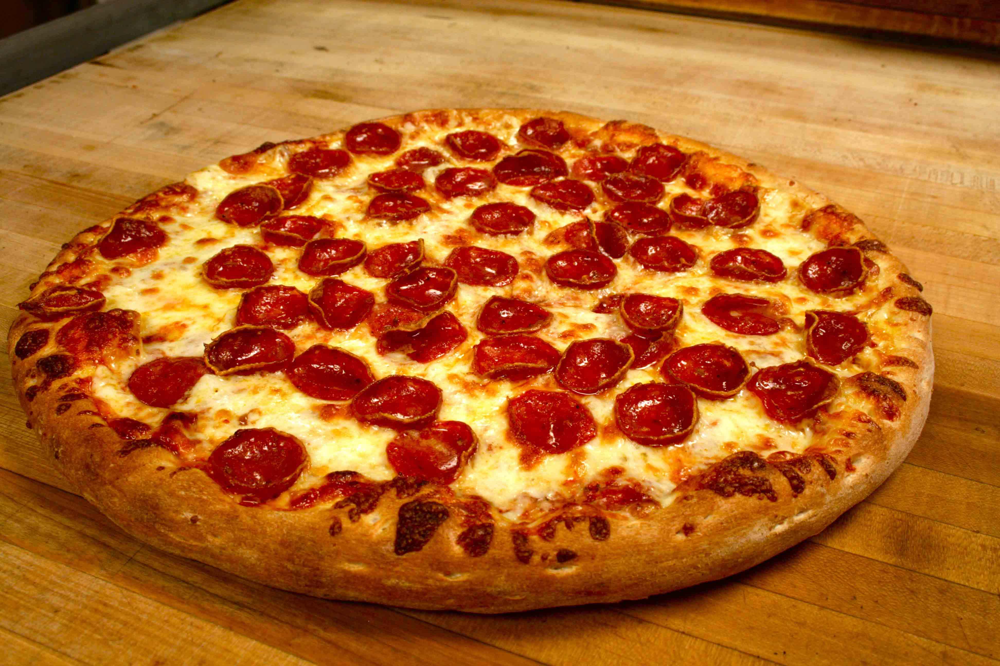

Home
Pizza

Description
Pizza is a classic italian dish that is made of a thin dough crust with tomato sauce and cheese on top.
Ingredients
- 250g of 0000 flour.
- 1/2 cup of warm water.
- 2 teaspoons of dry yeast.
- 2 spoonfuls of oil.
- 2 teaspoons of Salt.
- 1/2 cup of tomato puree.
- 100g of mozzarella cheese.
- Any topping you want.
Steps
- Mix prepare the flour with the yeast, oil and salt and add slowly the warm water.
- Knead the dough for 5-10 minutes and let it rest for another 30 minutes.
- Spread your dough in a cookin tray and add the tomato puree and the cheese on top.
- Cook in the oven at 200ºC for 25 minutes.
- Add your toppings and enjoy.